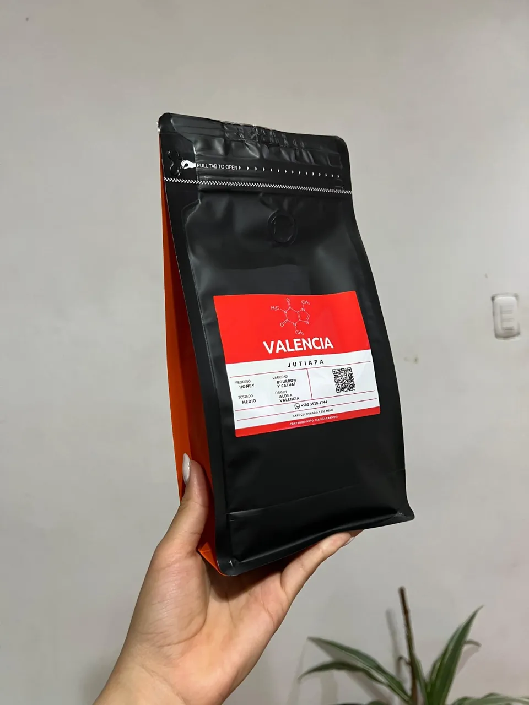
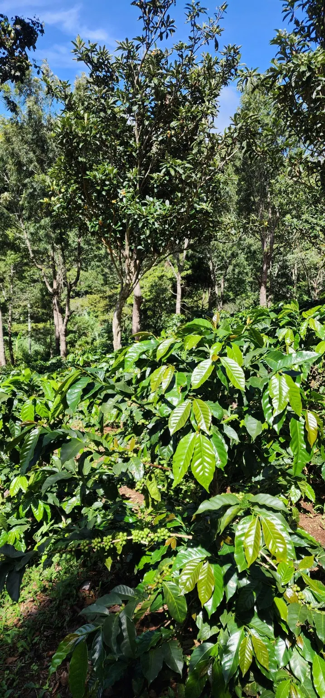
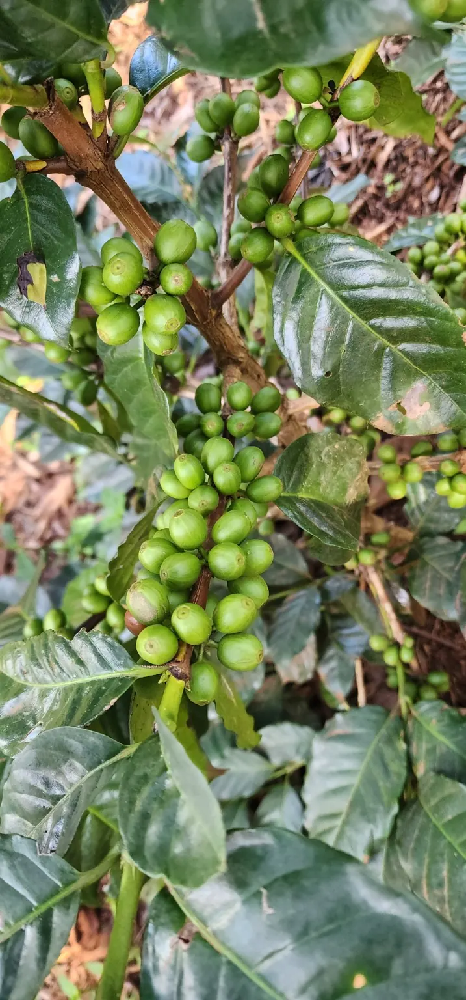
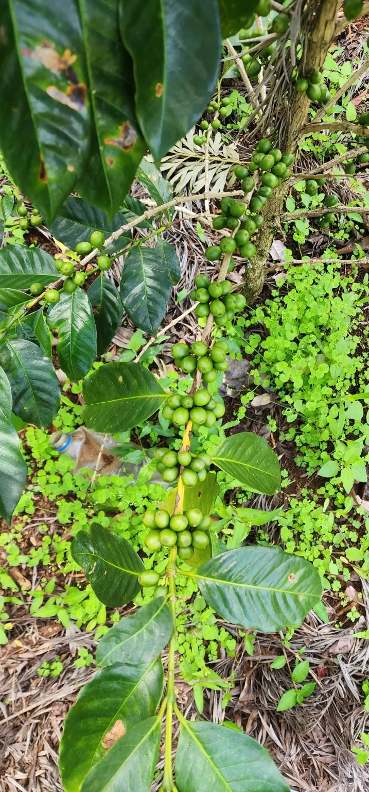

Café Valencia Honey
Cultivado entre 1,750 y 1,800 msnm. Sabor dulce y balanceado, con notas de miel y chocolate.
Pedir por WhatsAppProcesamos nuestro propio café seleccionando frutos maduros y cuidando cada etapa del proceso, directo desde las montañas de Jutiapa.
Pedir por WhatsApp
El café es seleccionado cuidadosamente, procesando los granos maduros para ofrecer la mejor calidad en cada bolsa.
Cultivado entre 1,750 y 1,800 msnm. Sabor dulce y balanceado, con notas de miel y chocolate.
Pedir por WhatsApp
Nuestro café crece entre 1,750 y 1,800 msnm en la Aldea Valencia, Jutiapa, bajo condiciones ideales de suelo, temperatura y sombra natural de gravileos.
Utilizamos el proceso Honey, seleccionando únicamente los frutos más maduros en cada recolección para garantizar un perfil de taza dulce, limpio y balanceado.
Un café de altura con notas dulces, aroma floral y cuerpo agradable. El proceso Honey resalta los azúcares naturales del fruto, dando una taza equilibrada y memorable.
Notas:

En la Aldea Valencia decidimos dar el siguiente paso: dejar de vender nuestro café en cereza para transformarlo nosotros mismos, agregando valor y ayudando al desarrollo de la comunidad.
Bajo sombra de gravileos, cuidamos cada etapa del proceso. Este proyecto es el resultado del trabajo y pasión de:
Y de muchas personas que nos ayudan desde la recolección hasta el procesamiento final.

Hacemos envíos a todo el país. Escríbenos para confirmar disponibilidad y coordinar tu pedido.
Enviar WhatsApp al 3520-2744